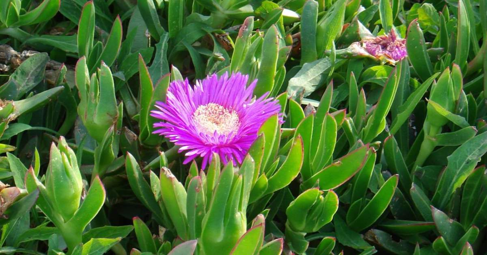

Ayuntamiento de Senés
JARDIN BOTANICO DE ESPECIES AUTOCTONAS DE SENES

Carpobrotus edulis

La uña de gato (Carpobrotus edulis) es una planta perenne suculenta típica de zonas costeras y ambientes áridos, ampliamente distribuida en áreas soleadas y de suelos pobres o arenosos. Presenta un porte rastrero y muy extendido, pudiendo cubrir grandes superficies en condiciones favorables.
Sus hojas son carnosas, alargadas y persistentes, de color verde intenso, lo que le permite almacenar agua y adaptarse a climas secos. Sus flores, generalmente de color amarillo o rosado, son grandes y vistosas, y tienen una gran importancia ecológica al atraer a numerosos polinizadores.
La uña de gato es una especie característica de zonas costeras y regiones de clima mediterráneo, donde crece de forma natural en terrenos arenosos, rocosos y con escasa humedad. Se adapta especialmente bien a suelos pobres, salinos y expuestos al sol, siendo muy frecuente en dunas, laderas y zonas degradadas.
La uña de gato posee diversas propiedades beneficiosas utilizadas en la medicina tradicional. Entre ellas destacan sus efectos calmantes, cicatrizantes y antiinflamatorios. Tradicionalmente se ha utilizado para aliviar irritaciones cutáneas, heridas leves y picaduras.
La uña de gato ha sido asociada con la adaptación y la expansión en el medio natural. Su capacidad para cubrir grandes superficies y prosperar en condiciones difíciles la convierte en un símbolo de resistencia y crecimiento.
En Senés y su entorno, la uña de gato es conocida principalmente como planta ornamental y de cobertura del suelo. Se ha utilizado en jardines y espacios abiertos por su resistencia y facilidad de crecimiento, siendo apreciada por su capacidad para cubrir terrenos.
La uña de gato puede florecer durante gran parte del año en climas mediterráneos suaves, aunque su periodo principal de floración se concentra entre primavera y verano. Sus flores, de tonalidades amarillas o rosadas, aparecen en abundancia y constituyen una importante fuente de alimento para insectos polinizadores.
La uña de gato es una planta muy utilizada en jardinería por su capacidad para cubrir rápidamente grandes superficies y resistir condiciones adversas. Sin embargo, en algunos lugares ha llegado a considerarse una especie invasora por su rápida expansión.
Además, sus hojas carnosas almacenan agua, lo que le permite sobrevivir en ambientes muy secos, siendo un claro ejemplo de adaptación al clima mediterráneo.